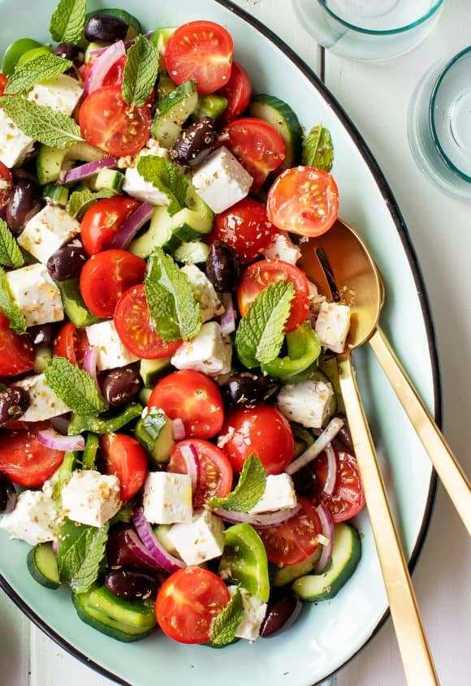

Home
Greec salad

Description
This easy Greek salad recipe is a flavorful, refreshing summer side dish!
If you make it ahead for a gathering, save a few mint leaves to add right before serving.
Ingredients
Dressing
- ¼ cup extra-virgin olive oil
- 3 tablespoons red wine vinegar
- 1 garlic clove, minced
- ½ teaspoon dried oregano, more for sprinkling
- ¼ teaspoon Dijon mustard
- ¼ teaspoon sea salt
- Freshly ground black pepper
For the salad
- 1 English cucumber, cut lengthwise, seeded, and sliced ¼ inch thick
- 1 green bell pepper, chopped into 1-inch pieces
- 2 cups halved cherry tomatoes
- 5 ounces feta cheese, cut into ½ inch cubes
- ⅓ cup thinly sliced red onion
- ⅓ cup pitted Kalamata olives
- ⅓ cup fresh mint leaves
Steps
- Make the dressing: In a small bowl, whisk together the olive oil, vinegar, garlic, oregano, mustard, salt,
and several grinds of pepper.
- On a large platter, arrange the cucumber, green pepper, cherry tomatoes, feta cheese, red onions, and
olives. Drizzle with the dressing and very gently toss. Sprinkle with a few generous pinches of oregano and
top with the mint leaves. Season to taste and serve.